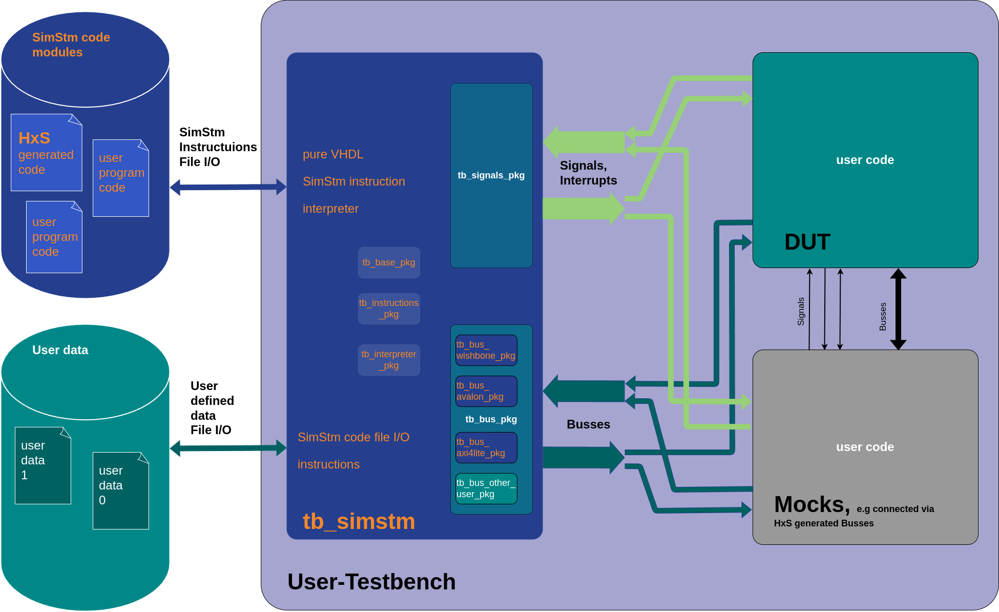

2. Integration¶
The following picture illustrates how the tb_simstm module is
integrated into the user testbench. The tb_simstm module should not
be changed by the user. The signals and interrupts that the user wants
to control the DUT or the Mocks shall be defined in tb_signals_pkg.
The buses the user wants to connect to the DUT or the Mocks shall be
defined in tb_bus_pkg, and eventually, a new bus type package if the
predefined buses aren’t sufficient. All other packages shall not be
changed.

simstm-overview¶